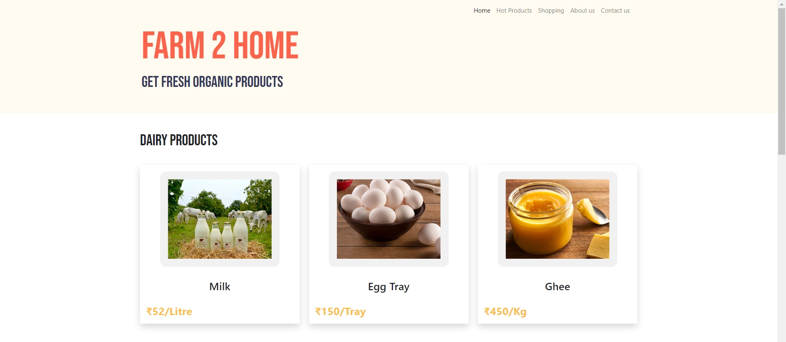
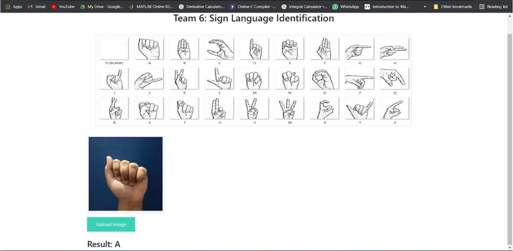
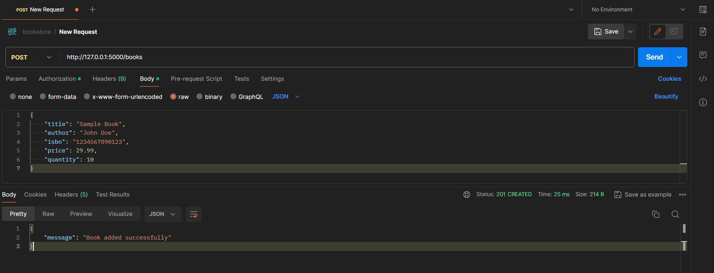
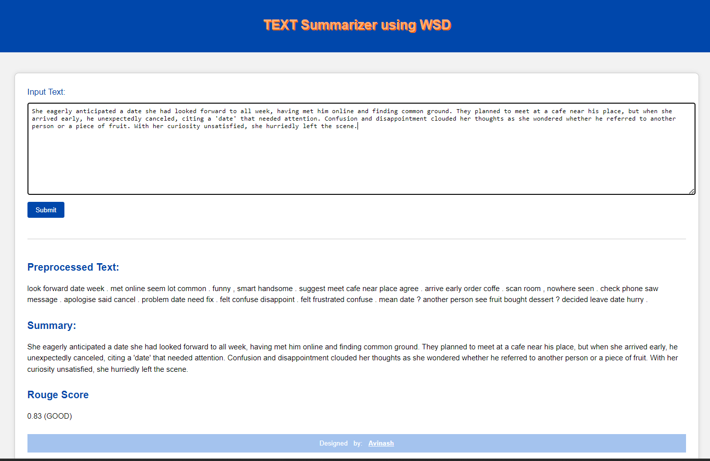

Farm2Home
An online platform facilitating direct digital interaction between farmers and consumers, eliminating intermediaries entirely.
COMPLETED: DEC 2023

Sign Language Detector
Neural network system detecting sign language with over 90% accuracy using a proprietary dataset and custom training pipeline.
COMPLETED: NOV 2023
Course Management System
Comprehensive system enabling course creation, enrollment, and management with secure authentication and role-based access control.
COMPLETED: MAR 2023

Bookstore Management API
RESTful API for managing bookstore operations — book addition, retrieval, update, and deletion with JWT authentication.
COMPLETED: FEB 2024
Sharing App
Web application enabling secure file sharing with user account management and granular access control for uploaded files.
COMPLETED: DEC 2023

Text Summarizer with WSD
Advanced text summarization tool using Word Sense Disambiguation techniques to enhance accuracy and relevance of summaries.
COMPLETED: SEP 2023
Sony Companion App 1
Windows desktop app (C++/DirectX11/ImGui) to control Sony WH/WF headphones — Noise Cancelling, EQ, DSEE, Clear Bass, and battery monitoring via Bluetooth.
RELEASED: JUL 2026
FinAPI 1
High-performance financial API with FastAPI & PostgreSQL featuring pessimistic locking, ACID-compliant idempotency, JWT auth, and structured observability.
RELEASED: JUN 2026
RAG Knowledge Assistant 1
Production-grade RAG system using FastAPI, LangChain, Pinecone, and SentenceTransformers with cross-encoder reranking and rigorous RAGAS evaluation.
RELEASED: MAY 2026
ArtVue 16
Aesthetic online art auction platform featuring real-time bidding, artist profiles, gallery browsing, and secure payment flows.
COMPLETED: OCT 2023
Hospital Login / Signup 8
Animated hospital website with JS-powered slide transitions between login and signup forms, plus a home page with embedded map for location reference.
COMPLETED: SEP 2022